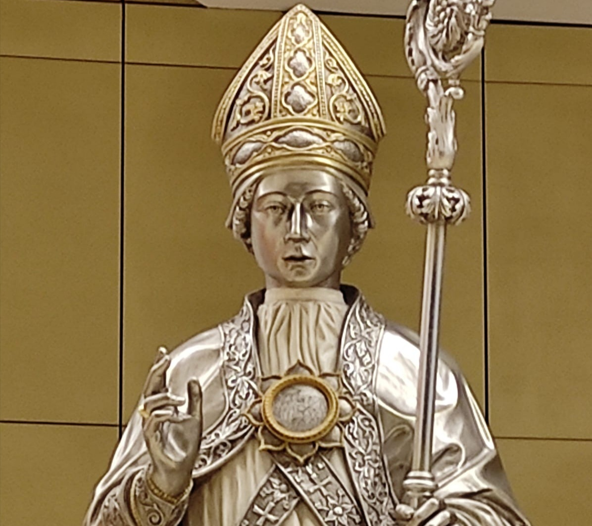

In preparazione alla sua festa che si celebra ogni anno il 5 Agosto, giorno del martirio.
O ammirabile ed eroico S. Emidio, nostro celeste patrono e protettore, atleta e messaggero del Signore, tu che ti sei nutrito della Parola di Dio e ti sei fatto apostolo di pace e di speranza, e hai portato il lieto annunzio ai poveri, e hai parlato a tutti con un linguaggio di amore e di bontà, rendici partecipi, te ne preghiamo, di una scintilla di quell'ardente carità che hai avuto tu, e fa che anche noi possiamo avere la forza dinamica di annunciare il Vangelo e proclamare senza vergogna il glorioso e Santo Nome di Gesù Cristo. Aiutaci ad amare Dio con tutto il nostro cuore e a servirlo con carità e amore nei nostri fratelli, affinché praticando il nostro servizio cristiano, possiamo indirizzare i cuori verso Dio, il solo ed unico supremo bene. Amen.
1 Padre, Ave e Gloria.
Sant Emidio Protettore
sul tuo popolo devoto
col tuo sguardo di Pastore
veglia sempre in tutte l'ore.
O potente e vittorioso martire S. Emidio, docile strumento di grazia e di sapienza, vincitore degli idoli e dei demoni, tu che hai debellato le potenze del male con l'invocazione del Santissimo Nome di Gesù Cristo, fa che anche noi con l'ausilio del tuo soccorso possiamo vincere la tirannia del demonio, le lotte, le battaglie e le passioni ingannatrici di questo mondo. Tu che sei stato eletto come particolare protettore contro il terremoto, e la tua vita è stata illuminata dal potere soprannaturale di preservarci dalle forze della natura, dalle guerre, dalle pestilenze e dalla carestia, alla tua intercessione affidiamo la tutela della nostra vita e ti chiediamo di ottenerci da Dio grazia, protezione e pace per la nostra patria. La nostra tanta fervorosa fiducia nel tuo potente patrocinio è proprio giustificata dalla così evidente potenza nel dominare le occulte forze della natura, e qualunque altra calamità. Amen.
1 Padre, Ave e Gloria.
Il tuo braccio taumaturgo
tieni alzato su di noi
ci proteggi da ogni male
e da ogni altra avversità.
O illustre ed eccelso martire S. Emidio, araldo di Dio e testimone della verità, astro fulgido di luce celestiale, tu che sei stato dotato di sublime eroismo per affrontare il dolore, le tante fatiche apostoliche, la persecuzione, le prepotenze, le calunnie e perfino il crudele martirio, e con spirito di eroica fede hai sopportato tutto con docilità per amor di Dio, rimanendo sempre saldo nella fede cristiana, fa che anche noi sostenuti da te, possiamo testimoniare la nostra fede con le opere. Il tuo coraggioso e luminoso esempio sia per ciascuno di noi oggi un sollecito richiamo non solo ad un'autentica fede, ma anche un invito a vivere nella vera santità, affinché una volta terminato il nostro combattimento terreno, per i tuoi meriti possiamo ottenere dal Signore di poter essere un giorno accolti nel regno dei cieli insieme a te, e far parte per l'eternità della Santa Famiglia di Dio: Gesù, Giuseppe e Maria. Amen.
1 Padre, Ave e Gloria.
Santo Martire glorioso
tutti a Te noi ci affidiamo
e su tutti noi invochiamo
la tua santa benedizione.
| Signore, pietà. | Signore, pietà. |
| Cristo, pietà. | Cristo, pietà. |
| Signore, pietà. | Signore, pietà. |
| Cristo, ascoltaci. | Cristo, ascoltaci. |
| Cristo, esaudiscici. | Cristo, esaudiscici. |
| Padre del cielo, che sei Dio | Abbi pietà di noi |
| Figlio, Redentore del mondo, che sei Dio | Abbi pietà di noi |
| Spirito Santo, che sei Dio | Abbi pietà di noi |
| Santa Trinità, unico Dio | Abbi pietà di noi |
| Sant'Emidio, apostolo invincibile della fede | Prega per noi |
| Sant'Emidio, araldo di Dio | Prega per noi |
| Sant'Emidio, insigne martire di Gesù Cristo | Prega per noi |
| Sant'Emidio, candido giglio di purezza | Prega per noi |
| Sant'Emidio, esempio di carità cristiana | Prega per noi |
| Sant'Emidio, soccorritore dei poveri e dei malati | Prega per noi |
| Sant'Emidio, potente taumaturgo | Prega per noi |
| Sant'Emidio, pastore delle anime | Prega per noi |
| Sant'Emidio, eroico soldato di Gesù Cristo | Prega per noi |
| Sant'Emidio, debellatore e vincitore dei demoni | Prega per noi |
| Sant'Emidio, martire illustre del cristianesimo | Prega per noi |
| Sant'Emidio, ambasciatore di Gesù Cristo | Prega per noi |
| Sant'Emidio, coraggioso banditore del Vangelo | Prega per noi |
| Sant'Emidio, messaggero di Dio | Prega per noi |
| Sant'Emidio, docile strumento di grazia e di sapienza | Prega per noi |
| Sant'Emidio, vincitore degli idoli | Prega per noi |
| Sant'Emidio, capitano di Dio | Prega per noi |
| Sant'Emidio, convertitore e battezzatore dei pagani | Prega per noi |
| Sant'Emidio, atleta di Gesù Cristo | Prega per noi |
| Sant'Emidio, missionario di speranza | Prega per noi |
| Sant'Emidio, operatore di strepitosi miracoli sugli infermi | Prega per noi |
| Sant'Emidio, fedele ministro di Dio | Prega per noi |
| Sant'Emidio, medico prodigioso | Prega per noi |
| Sant'Emidio, dotato di potere contro i demoni e le insidie del maligno | Prega per noi |
| Sant'Emidio, nostra tutela e vanto | Prega per noi |
| Sant'Emidio, nostro patrono e protettore | Prega per noi e liberaci dal flagello del terremoto. |
Agnello di Dio, che togli i peccati del mondo, perdonaci o Signore.
Agnello di Dio, che togli i peccati del mondo, esaudiscici o Signore.
Agnello di Dio, che togli i peccati del mondo, abbi pietà di noi.
Prega per noi S. Emidio, vescovo e martire, affinché saremo esauditi da Dio e resi degni delle promesse di Gesù Cristo.
O Signore Dio nostro, ti rendiamo grazie per il tuo glorioso e santo vescovo e martire Emidio, nostro particolare protettore. Concedi a noi suoi devoti, ti supplichiamo, per i suoi meriti e la sua intercessione, di essere preservati dal flagello del terremoto e da qualunque altra calamità, per Gesù Cristo nostro Signore. Amen.
< indietro